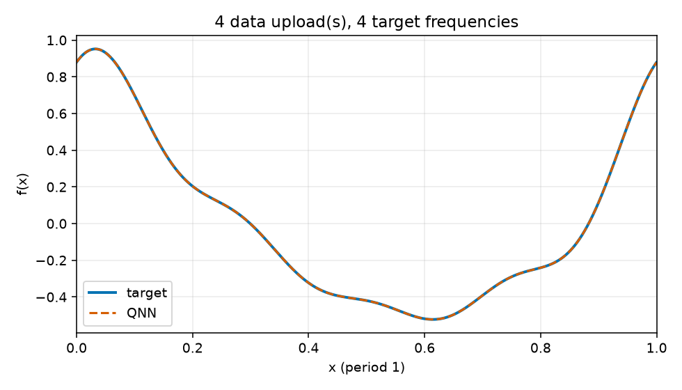
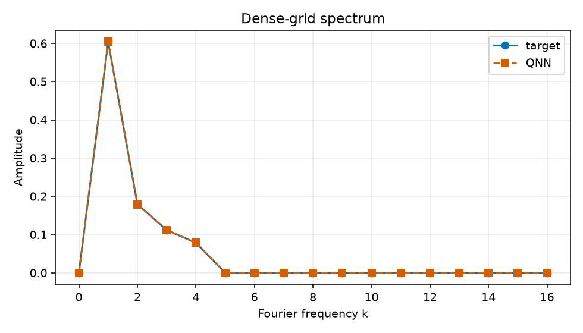

Uploads: 4; target frequencies: 4; train/validation/test: 64/128/512; objective: empirical training MSE only.
{
"run_id": "20261017T024039938076Z_reupload-4_k4_seed-0045_04377838",
"comparison_group": "periodic-function-mse-zero-offset-reupload-sweep-z1-readout",
"data_uploads": 4,
"n_target_frequencies": 4,
"seed": 45,
"data_seed": 314159,
"dataset_sizes": {
"train": 64,
"validation": 128,
"test": 512
},
"target_components": [
[
1,
0.55,
0.25
],
[
2,
0.16,
0.08
],
[
3,
0.1,
0.05
],
[
4,
0.07,
0.035
]
],
"target_offset": 0.0,
"objective": "training-set MSE only",
"optimizer": "L-BFGS-B",
"iterations": 56,
"function_evaluations": 1885,
"optimizer_success": true,
"optimizer_message": "CONVERGENCE: RELATIVE REDUCTION OF F <= FACTR*EPSMCH",
"initial_train_mse": 0.5667204998156802,
"final_train_mse": 1.84651925702309e-13,
"validation_mse": 1.5486737167824817e-13,
"test_mse": 1.5371655262001447e-13,
"known_frequency_fourier_baseline_test_mse": 2.8845849053330533e-31,
"target_support": [
1,
2,
3,
4
],
"predicted_support": [
1,
2,
3,
4
],
"frequency_support_threshold_function_amplitude": 0.001,
"support_precision": 1.0,
"support_recall": 1.0,
"target_amplitudes_k0_to_16": [
3.337987438539747e-17,
0.6041522986797286,
0.1788854381999832,
0.11180339887498951,
0.07826237921249267,
3.111669413838609e-17,
1.0782582689195332e-17,
1.9716710816326602e-17,
6.698493011886988e-18,
1.1635421212890542e-17,
2.525458054938055e-18,
8.020732245388063e-18,
4.685641790835123e-18,
4.924865114041699e-18,
3.888524730395962e-18,
1.488532939329537e-17,
8.37948952971858e-18
],
"predicted_amplitudes_k0_to_16": [
1.4964820773987256e-07,
0.6041520632818318,
0.17888560960054203,
0.11180348443425775,
0.078262004368959,
3.2976345265701425e-17,
5.6111471358866345e-18,
1.5213901480814376e-17,
6.674081710822123e-18,
9.406723176743442e-18,
4.208253392672853e-18,
4.243074822316316e-18,
1.8602226035420897e-17,
8.455434401418689e-18,
1.2080925985847379e-17,
1.7850396640403258e-17,
1.3783744250158162e-17
],
"frequency_amplitude_rmse_k0_to_16": 1.2247760193575677e-07,
"artifacts": [
"dataset.npz",
"metrics.jsonl",
"parameters.npz",
"parameters.json",
"evaluation_outputs.npz",
"function_fit.png",
"spectrum.png",
"report.html"
]
}
